Sortwick：グッズ整理パズル棚を片づけて、 町をよみがえらせよう。
棚を片づけて、3つそろえて、海辺の町をよみがえらせよう。そこに住む人たちとも出会える。
iPhoneで無料 · オフラインで遊べる · アカウント不要


Sortwickとは？
Sortwick（ソートウィック）は、iPhoneとiPadで遊べる無料の商品仕分けパズルです。棚から棚へアイテムを動かし、同じものを3つそろえて消し、集めたスターで海辺の小さな町ソルトウィックを修復します。片づけと歯ごたえのあるパズルが好きな大人のための、ほっこりした整理ゲーム。トリプルマッチのルールで数百レベル、オフラインでも遊べます。
- iPhoneで無料
- iOS 17以降
- オフラインで遊べる
- 9言語対応
- アカウント不要
10秒でわかる遊び方
棚から棚へアイテムを動かし、同じものを3つそろえて消していく。どのレベルにも必ず解き方があり、クリアするたびにスターがもらえる。スターを使って、灯台、カフェ、街灯と、ソルトウィックの町をひとつずつ修復しよう。
アイテムをタップ、棚をタップ
空きのある棚へ、アイテムを1つずつ動かします。
同じ3つで消える
同じアイテムが3つそろうと、棚から消えます。
スターを集めて町を修復
レベルをクリアするたびに、次の場所を直すスターがもらえます。
ゲームの中をのぞく
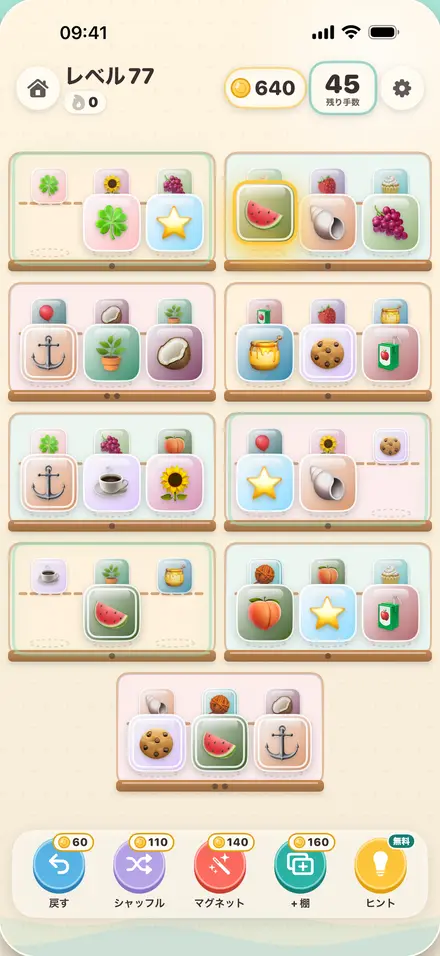
同じ3つで棚がすっきり 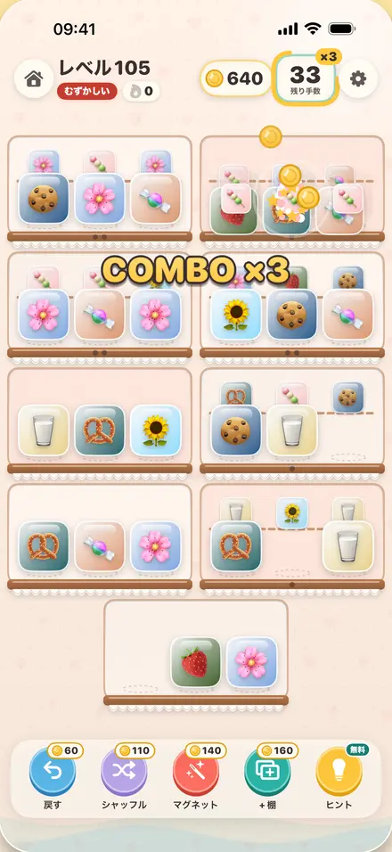
連続クリアでコンボ 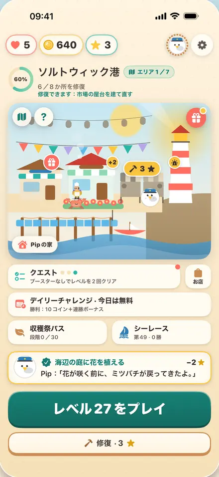
話しかけてくる町 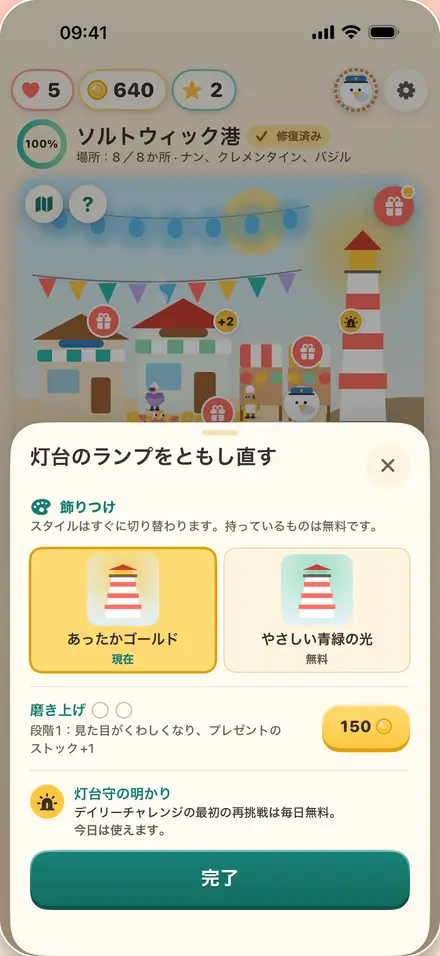
どの場所も好きに飾りつけ 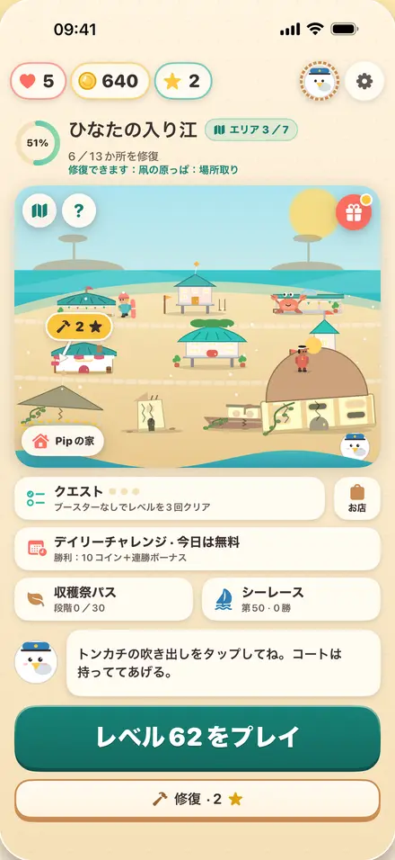
修復した場所からプレゼントが届く 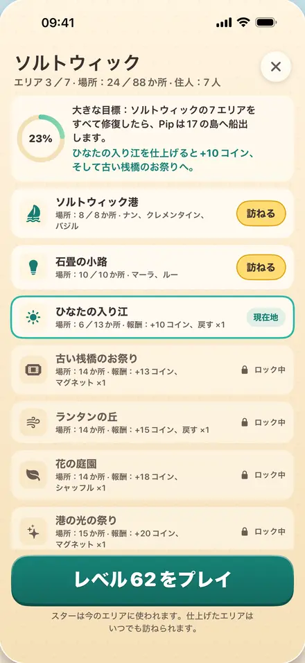
よみがえらせる7つのエリア 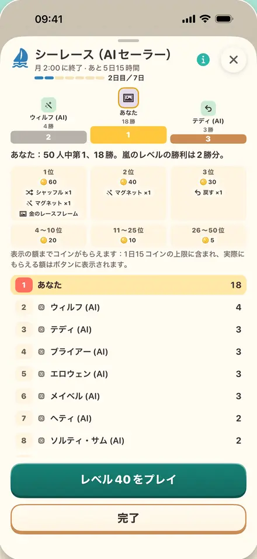
毎週のレースで1位をめざそう
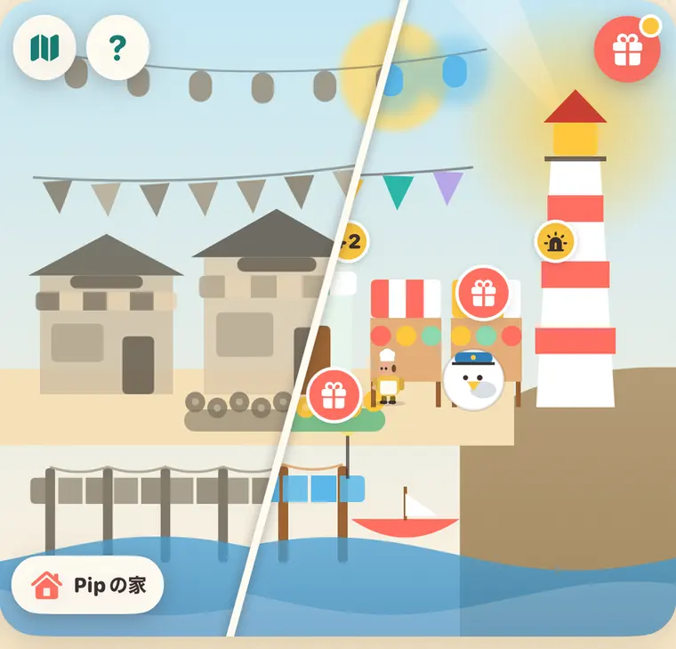
話しかけてくる町
星を集めてSaltwickを再建
- ソルトウィック港から港の光の祭りまで7つのエリア、そのあとは島々へ
- ナン、バジル、クレメンタイン、マーラといった住人は、家が直るとすぐに引っ越してくる。遊歩道を散歩し、タップすると一言話してくれる
- 修復のたびにちいさな会話。住人が話し、港のカモメPipが答える
- パン屋と灯台には役目がある。「バジルの朝ごはん」はその日最初のレベルで+2手、灯台守はデイリーチャレンジの最初の再挑戦をおごってくれる
町の住人たち

Pip
港のカモメのPip。ソルトウィックであなたを迎え、誰にでも返事をします。

Nan
Nanは、港の一角が修復されると戻ってきます。いつもひとこと声をかけてくれます。

Clementine
遊歩道を歩くカニのClementine。タップすると返事をしてくれます。
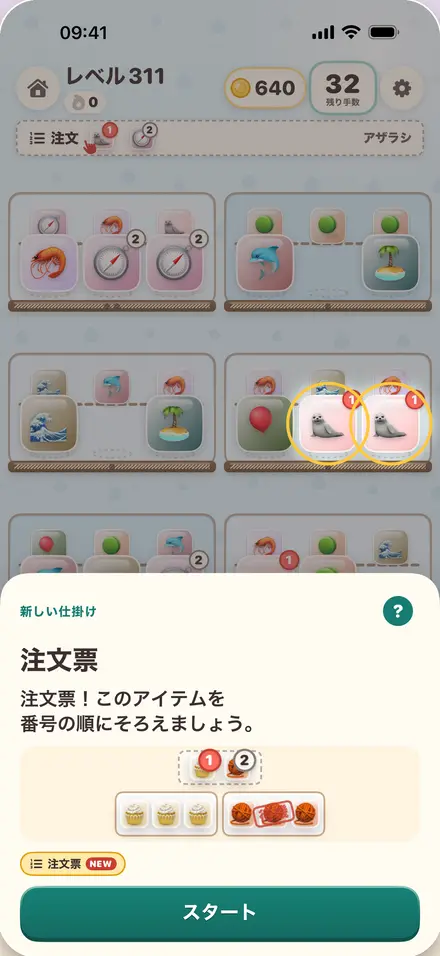
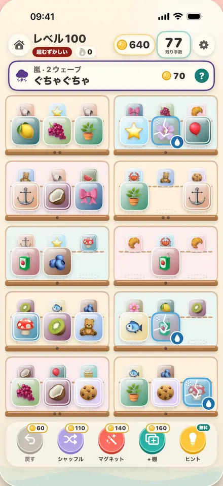
新しい仕掛けがひとつずつ
- ひび割れ棚、シュート、回転台、カウンター、吹雪、注文票が、氷、ロック、プレゼント、チェーン、木箱、霧、時間制限レベル、ベルトコンベアに加わる
- レベル開始シートが、最初の一手の前にそのレベルのアイテムで新しい仕掛けを見せてくれる。「遊び方」ガイドでルールはいつでもワンタップ
- 仕掛け同士の組み合わせ、バリエーション、そしてダブルシフトで2回目のアイテムの波がやってくる
本気の手ごたえ
- 難易度は本当に上がる。むずかしいレベル、超むずかしいレベル、嵐のレベル、ミステリーレベル、そしてひと休みのレベル
- 盤面はタワー、階段、分かれた列、空き棚など、いろいろな形
- 戻す、シャッフル、マグネットのブースターは使いたいときだけ。押しつけはなし
Sortwickがちがうところ
小さなダウンロード
約27MB。すぐにインストールでき、写真の容量を圧迫しません。
オフラインで遊べる
アカウントも通信も不要。電車でも飛行機でも、どこでも。
時間制限ではなく手数制
レベルの制限は手数なので、じっくり考えられます。時間で進むのは、ときどき出る時間制限レベルだけ。
最初の100レベルは強制広告なし
レベル間の広告はめったに出ず、負けたあとには決して流れません。報酬動画はいつも自分で選ぶものです。
どの画面にもぴったり
iPhone、折りたたみスマホの広い内側画面、iPad。遊ぶ画面に合わせたレイアウトです。
ほっこり、オフラインでも
- オフラインでも遊べて、アカウント不要
- デイリープレゼント、クエスト、デイリーチャレンジ、毎週のシーレース、28日間のシーズン
- アルバムでカードを集め、実績を解除し、集めた家具でPipの家を飾ろう
- 基本プレイ無料。課金でレベルの解き方が変わることはなく、アルバムの木箱は購入できません。出現確率はいつでも表示されます
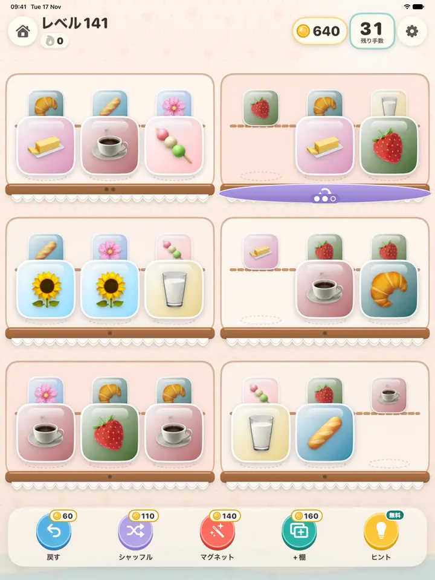
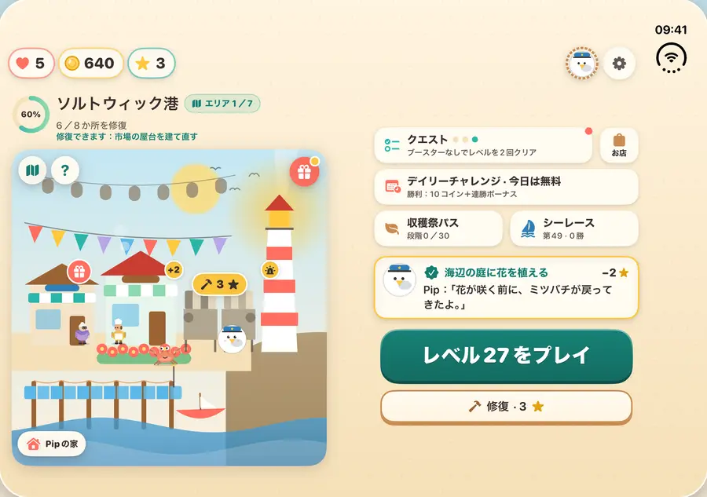
近日公開
Android版：テストにご協力ください
Android版のSortwickはGoogle Playでクローズドテスト中で、まだ公開されていません。テストに参加して、ひと足早く遊んで、感想を聞かせてください。
Androidテストに参加するテストページは英語です。

よくある質問
商品仕分けゲームとは？
商品仕分けゲーム（グッズソート、トリプルマッチ、グッズの3マッチとも呼ばれます）は、棚から棚へアイテムを動かし、同じものを3つそろえて消していくパズルです。Sortwickはこのタイプの仕分けゲームで、集めたスターで海辺の町を修復する楽しみもあります。
Sortwickは無料ですか？
はい。ダウンロードもプレイも無料です。購入は任意で、レベルの解き方が変わることはありません。報酬動画もいつも自分で選ぶものです。
Sortwickはオフラインで遊べますか？
はい。レベル、町、進行状況は、インターネットもアカウントもなしで動きます。通信が必要なのは、ランキング、購入、報酬動画などの追加要素だけです。
強制広告のない仕分けゲームはありますか？
Sortwickでは、最初の100レベルのあいだ広告がプレイをさえぎることはなく、負けたあとに流れることもありません。その後もレベル間の広告はめったに出ず、「広告を削除」を一度購入すれば完全になくなります。
ほかの商品仕分けゲームとどこがちがいますか？
レベルの制限は時間ではなく手数で（時間で進むのは、ときどき出る時間制限レベルだけ）、どのレベルにも必ず解き方があります。さらに、住人が返事をしてくれる町、約27MBの小さなダウンロード、オフラインプレイが特長です。
ライフはどういう仕組み？
レベルに失敗するとライフを1つ失います（最初のレベルは何度でも無料でやり直せます）。ライフは時間がたつと自動で回復します。ライフがなくなったら、無料の動画を見て1つ取り戻せます。ストアではコインで補充でき、ハーバーVIPならライフの上限が1つ増え、スターターパックには1時間のライフ無制限が含まれます。
広告はある？
最初のレベルでは広告は一切ありません。その後も、報酬動画（ライフ+1、数手追加、無料ブースター）はいつも自分で選ぶものです。レベル間の広告はめったに出ないようにしています。最初の100レベルでは流れず、失敗のあとにも流れません。「広告を削除」（1回の購入）、ハーバーVIP、または最近の購入があればレベル間の広告は消え、任意の動画はそのまま残ります。レベル1のあとに、広告の同意（EEA・英国・スイス）と広告識別子の利用許可を尋ねます。断っても広告がパーソナライズされなくなるだけです。
何が買える？
すべて任意です。コインパックは500・1,400・3,100・8,500コイン。1回限りのスターターパックは900コイン、ブースター6個、1時間のライフ無制限。ハーバーVIPは月額サブスクリプションで、毎日60コイン、週1回のチェスト、ライフ上限+1、レベル間の広告なし。28日間シーズンの「収穫祭パス」プレミアム。そして「広告を削除」。価格はApp Storeの通貨で各購入ボタンの横に表示され、課金前にAppleが確認します。コインはコンティニュー、ライフ、ブースターに使え、レベルの解き方が変わることはありません。設定で1日の購入上限を決められます。
購入の復元やハーバーVIPの解約は？
ゲーム内のストアを開き、購入時と同じAppleアカウントでサインインして「購入を復元」をタップします。ハーバーVIPは、iOSの設定 > 自分の名前 > サブスクリプションで、更新日の24時間前までに解約しない限り毎月更新されます。返金はAppleが対応します。
Game Centerは使う？
はい、サインインしている場合のみ。デイリーチャレンジのスコアと毎週のシーレースの勝利数が2つのランキングに送られ、91の実績が進み具合を記録します。サインアウト中は何も送信されず、ゲームはまったく同じように遊べます。独自のサインイン画面は表示しません。
どんなデータを集める？
個人データは集めません。アカウントはなく、あなたのデータを受け取る自前のサーバーもありません。ゲームバランスの調整のために、個人データを含まない匿名のプレイ統計を送信しますが、設定でオフにできます。進行状況はiPhoneの中と、iCloudを使っている場合はあなた自身のiCloudアカウントに保存されます。広告はGoogle AdMobが配信し、一般的な広告データを受け取ります。パーソナライズはあなたの許可があるときだけ。Game Centerのスコアと購入はAppleが処理します。詳しくはプライバシーポリシーをご覧ください。
対応機種と言語は？
iOS 17以降のiPhoneとiPad。日本語、英語、ドイツ語、フランス語、スペイン語、イタリア語、ポルトガル語（ブラジル）、ルーマニア語、韓国語に対応。
棚を片づける準備はできた？
App Storeで無料。Pipが港で待っています。